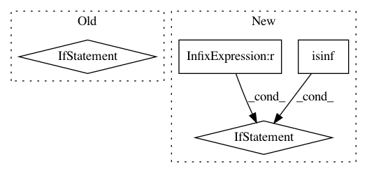

7f6cd7f219c8c7f77b8e49e92f26ffae9229d698,src/math_util.py,,logsumexp,#Any#,53
Before Change
def logsumexp(array):
m = max(array)
if m == float("inf"):
return float("inf")
elif m == -float("inf"):
return -float("inf")
// This math.exp can"t overflow b/c a - m is <= 0, so ieee_exp is
// the same.
return m + math.log(sum(math.exp(a - m) for a in array))
def logmeanexp(array):
return logsumexp(array) - math.log(len(array))
After Change
// m = -inf means addends are all zero, hence so is sum, and log is
// -inf. But if +inf and -inf are among the inputs, or if input is
// NaN, let the usual computation yield a NaN.
if math.isinf(m) and min(array) != -m and \
all(not math.isnan(a) for a in array):
return m
// Since m = max{a_0, a_1, ...}, it follows that a <= m for all a,
// so a - m <= 0; hence exp(a - m) is guaranteed not to overflow.
return m + math.log(sum(math.exp(a - m) for a in array))
def logmeanexp(array):
inf = float("inf")
In pattern: SUPERPATTERN
Frequency: 4
Non-data size: 4
Instances
Project Name: probcomp/bayeslite
Commit Name: 7f6cd7f219c8c7f77b8e49e92f26ffae9229d698
Time: 2016-03-16
Author: riastradh+probcomp@csail.mit.edu
File Name: src/math_util.py
Class Name:
Method Name: logsumexp
Project Name: senarvi/theanolm
Commit Name: 79e7954005167bb6ef0785def3ed0954b8f06f55
Time: 2016-11-14
Author: seppo.git@marjaniemi.com
File Name: theanolm/scoring/textscorer.py
Class Name: TextScorer
Method Name: score_sequence
Project Name: mathics/Mathics
Commit Name: 4a8fb7e9e9441a892622701a85979307c67324e7
Time: 2016-08-05
Author: 16sn6uv@gmail.com
File Name: mathics/builtin/arithmetic.py
Class Name: _MPMathFunction
Method Name: apply
Project Name: HyperGAN/HyperGAN
Commit Name: 779ced0fabaaad57feedf544f452a69cf1c9baf6
Time: 2017-08-28
Author: mikkel@255bits.com
File Name: examples/2d-distribution.py
Class Name:
Method Name: train